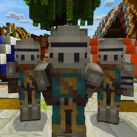

Альянс — это группа воинов, цель которых — защищать деревню и её окрестности от постоянных атак монстров. Их сила и сплочённость делают их важной частью мира второго сезона "Магический Мир". Большинство членов Альянса носят доспехи, подчёркивая их готовность к бою в любой момент.
Роль▼
Альянс появляется в первой серии второго сезона, когда Данил решает вступить в их ряды. С самого начала они помогают ему освоиться в мире, обучая сражаться с монстрами и защищать территорию рядом с деревней. Их основная миссия — охрана деревни и защита от угроз, таких как зомби, скелеты и другие враждебные существа. Альянс играет важную роль в жизни деревни, обеспечивая её безопасность и порядок.
Члены альянса▼
Члены Альянса ходят в прочных доспехах, которые защищают их в битвах с монстрами. Их оружие и броня сделаны для выживания в условиях постоянных атак. Данил, проходя обучение в Альянсе, также получает возможность использовать их экипировку, что помогает ему в сражениях. Хотя Альянс не всегда активно участвует в каждом бою Данила, они предоставляют ему необходимую поддержку и ресурсы для выполнения миссий.
Итог ▼
Альянс — это символ защиты и силы в мире Данила. Их основная цель — защищать территорию деревни от монстров, и они играют важную роль в обучении Данила и в обеспечении безопасности в магическом мире.